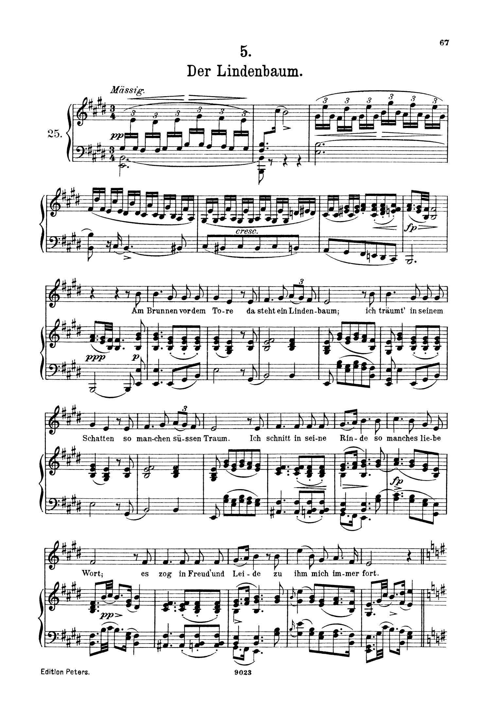
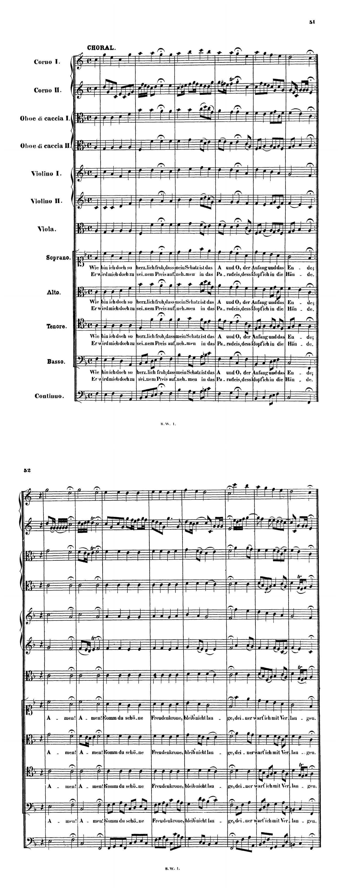

La ripresa della modulazione ai toni vicini. Il criterio non è l’alterazione estranea, ma la conferma cadenzale della nuova tonica.
Sei musicale se, in un pezzo nuovo, intuisci press’a poco quello che verrà.
Robert Schumann, Regole di vita musicale, 1850
A1Modulazioni ai toni vicini, pp. 2–21 (D. D’Urso, C. Bertolini, Il linguaggio della musica, 5° anno, Mondadori Education 2022). L’introduzione dell’unità, a p. 2, dà la definizione dei toni vicini usata in questa lezione.
La modulazione ai toni vicini è materia del secondo biennio. In quinta diventa uno strumento: serve alla seconda prova, nella realizzazione del basso e della melodia, e serve all’analisi, perché ogni brano dell’anno chiede di stabilire dove si trova il centro e se si sposta. La prima metà dell’ora riprende i concetti con esempi di otto battute e con un Lied di Schubert; la seconda metà è una prova di riconoscimento su tre esercizi.
Che cosa distingue una modulazione da una tonicizzazione. Quali sono i due momenti della modulazione diatonica. Quali cadenze confermano un tono nuovo. Come si scrive, in un’analisi, che una modulazione c’è.
Seguire la prima strofa sulla trascrizione. Segnare le battute in cui compare un suono estraneo a mi maggiore e la battuta in cui la strofa si chiude.
La prima strofa si divide in due metà di otto battute. La prima (bb. 9–16) espone due volte la stessa frase di quattro battute, che si apre sulla tonica e si chiude alla b. 16 con una cadenza perfetta in mi maggiore; non contiene alcun suono estraneo alla scala. La seconda metà (bb. 17–24), «Ich schnitt in seine Rinde», introduce alla b. 17 il la♯ nel basso: l’accordo fa♯–la♯–do♯–mi è la dominante di si in primo rivolto, e il si è la dominante di mi. Il la♯ non arriva però a una tonica di si: sul terzo quarto della stessa battuta il basso scende al la naturale, l’accordo diventa la settima di dominante di mi in terzo rivolto e risolve sulla tonica in primo rivolto alla b. 18. Il suono che avrebbe potuto aprire un tono nuovo viene annullato prima della battuta successiva. La b. 20 si ferma sul si, ma vi arriva dal quarto grado (b. 19): è una semicadenza in mi, non una cadenza in si. Le bb. 21–24 ripetono il percorso e lo chiudono con la cadenza perfetta della b. 24. Il la♯ delle bb. 17 e 21 è dunque una tonicizzazione della dominante: illumina il quinto grado per due quarti, senza che la strofa lasci mai mi maggiore.

La pagina dell’edizione Peters riprodotta qui contiene l’introduzione e la prima strofa; la trascrizione sopra riporta le bb. 9–24.
Un suono che non è la tonica la sostituisce come punto di riferimento tonale; perché si parli di modulazione «vera e propria» la nuova tonica deve essere confermata, cioè seguita da una o più formule di cadenza che si concludono su quel grado.
Se la nuova tonica non viene confermata e si torna subito alla situazione armonica iniziale, si ha una tonicizzazione momentanea di un grado della scala, prodotta da una dominante secondaria.
D. Giannetta, Elementi di Armonia e Analisi musicale, lezione X, § 10.1 «Modulazione vs tonicizzazione», p. 75. C. Marenco, Manuale d’armonia, § 6.4, p. 90, osserva che la teoria tradizionale chiama spesso «modulazione transitoria» ciò che, nel contesto del brano, è soltanto una dominante secondaria.
Le prime cinque battute dei due esempi sono identiche, e identica è la settima su re della b. 6, che contiene il fa♯. In a il sol diventa tonica: la b. 7 porta il quarto e il quinto grado di sol, la b. 8 la cadenza perfetta, e la frase si chiude nel tono nuovo. In b la settima su re si prolunga per tutta la b. 6, il sol arriva come accordo di dominante e alla b. 7 riceve il fa naturale, cioè la settima che lo riporta a do. Lo stesso accordo dà luogo a una modulazione nel primo caso e a una tonicizzazione nel secondo: la differenza non sta nell’accordo, ma in ciò che segue.
Nel Lindenbaum il la♯ della b. 17 apre la strada al si come l’esempio b apre la strada al sol: sul terzo quarto il basso torna al la♮ e la strofa resta in mi. È il caso b, in musica.
Segnare una modulazione a ogni alterazione estranea: nel Lindenbaum si conterebbero due modulazioni a si in otto battute, che l’ascolto non conferma. La decisione si prende guardando avanti, alla cadenza, non sul suono alterato.
Otto affermazioni sul criterio della conferma. Si risponde insieme; chi risponde indica la battuta dell’esempio che lo prova.
La modulazione diatonica si esplica mediante due momenti strettamente connessi: l’individuazione di un accordo comune, di per sé non sufficiente a delineare il nuovo tono; l’introduzione di un accordo contenente il suono caratteristico, indice inequivocabile dell’avvenuto mutamento tonale.
C. Marenco, Manuale d’armonia, § 6.3, p. 88
L’accordo comune (o perno) appartiene a entrambe le tonalità e si cifra due volte. Il suono caratteristico principale è quello che distingue il tono d’arrivo dal precedente: nelle modulazioni ascendenti a un tono maggiore è la sensibile del nuovo tono (da do a sol: fa♯), in quelle discendenti è il quarto grado del tono d’arrivo (da do a fa: si♭) (Marenco, § 6.2, p. 86). Nell’esempio a della slide precedente l’accordo comune è la minore della b. 5 (vi di do, ii di sol), il suono caratteristico è il fa♯ della b. 6, la conferma è la cadenza delle bb. 7–8.
Sono le tonalità che presentano una sola alterazione di differenza rispetto al tono di partenza e che quindi condividono con esso la maggior parte degli accordi (D’Urso, Bertolini, p. 2). Da do maggiore: sol maggiore (dominante, fa♯), fa maggiore (sottodominante, si♭), la minore (sopradominante, sol♯), mi minore (mediante, fa♯ e re♯), re minore (sopratonica, si♭ e do♯). Verso i toni minori i suoni caratteristici sono due: quello in armatura e la sensibile; Marenco considera «vero» suono caratteristico quello in armatura (p. 86). Il settimo grado non genera un tono vicino, perché la sua triade è diminuita.
Indicare come accordo comune l’accordo che contiene il suono caratteristico. Il perno è l’ultimo accordo che si può leggere in entrambi i toni; quello che segue non è più ambiguo.
Il corale di Bach, nella slide successiva, mostra la stessa successione di accordo comune, suono caratteristico e cadenza in una frase di repertorio.
Il corale è in fa maggiore. La prima frase (bb. 1–2) resta nella tonalità d’impianto; il re minore della b. 1, terzo quarto, è il sesto grado e non porta alcun suono estraneo. La seconda frase (bb. 3–4) si muove per i gradi di fa fino al terzo quarto della b. 3, dove l’accordo di fa in primo rivolto (la al basso) è l’ultimo leggibile in entrambi i toni: I6 di fa, IV6 di do. Sulla seconda metà dello stesso quarto il basso sale al si♮, terza di sol7: è il suono caratteristico di do, e l’accordo è la dominante di do in primo rivolto. Alla b. 4 la successione re minore con la settima – sol – do (ii7–V–I di do), con il do al soprano sul terzo quarto, è una cadenza perfetta nel tono della dominante. Sul quarto quarto della stessa battuta, però, il basso è già sul fa, e la terza frase (bb. 5–6) chiude di nuovo in fa con do7–fa. La cadenza in do c’è, ma la musica non vi resta: è una modulazione passeggera, che dura una frase.
Perfetta: V–I con le fondamentali al basso e la tonica al soprano; è la conferma piena. Imperfetta: V–I con un rivolto, o con la terza o la quinta al soprano; conferma più debolmente. Semicadenza: la frase si ferma sul V; non conferma nulla, perché quella dominante appartiene anche al tono di partenza (Lindenbaum, b. 20). D’inganno: V–vi; rinvia la conferma.
Decidere fra «modulazione» e «tonicizzazione» quando la cadenza c’è ma la frase successiva torna subito al tono di partenza. La risposta corretta è una terza: modulazione passeggera, con la battuta della cadenza e la battuta del ritorno.

1. La tonalità d’arrivo e il suo rapporto con quella di partenza («do maggiore, la dominante»).
2. L’accordo comune, con la doppia cifratura e la battuta.
3. La battuta della conferma e il tipo di cadenza.
4. La durata: se il tono nuovo resta, o se si torna, e dove.
1. Modula a do maggiore, la dominante. 2. Accordo comune: fa maggiore in primo rivolto, b. 3, terzo quarto (I6 di fa = IV6 di do); suono caratteristico: il si♮ del basso subito dopo. 3. Conferma alla b. 4, terzo quarto: cadenza perfetta ii7–V–I in do, con il do al soprano. 4. Non dura: il quarto quarto della b. 4 è già fa, e la b. 6 conferma fa. Modulazione passeggera.
Scrivere soltanto la prima indicazione. «Qui modula a do» è una constatazione; l’analisi comincia con la seconda indicazione, che non si può dare senza aver letto la partitura accordo per accordo.
Per ciascuno dei tre esercizi stabilire se si tratta di modulazione, di tonicizzazione o di modulazione passeggera. Per le modulazioni scrivere le quattro indicazioni; per le tonicizzazioni la battuta del suono estraneo e la battuta in cui viene annullato.
Si ascolta ogni esercizio due volte prima di scrivere. Le soluzioni si aprono dopo la consegna.
Si ha modulazione quando la nuova tonica è confermata da una cadenza; senza conferma si ha tonicizzazione (Giannetta, § 10.1, p. 75).
La modulazione diatonica ha due momenti: l’accordo comune e l’accordo con il suono caratteristico (Marenco, § 6.3, p. 88).
I toni vicini differiscono di un’alterazione; verso i toni minori i suoni caratteristici sono due.
Una cadenza seguita dal ritorno immediato al tono di partenza è una modulazione passeggera (BWV 1/6, b. 4).
Un’analisi scrive quattro indicazioni: tono d’arrivo, accordo comune, battuta della conferma, durata.
L’ora si chiude con il solfeggio (parlato, cantato, ritmico) e con i compiti scritti: il basso in si♭ maggiore e la melodia in la maggiore, che modulano a un tono vicino. Nella lezione 2: la sopradominante e la sopratonica.
Compiti per la prossima volta
Per mi bemolle maggiore, la maggiore, si bemolle maggiore e re maggiore scrivi i cinque toni vicini, con l’armatura di ciascuno.
Accanto a ognuno il nome della regione. Le armature dei cinque vicini stanno tutte a una sola alterazione di distanza da quella di partenza: se te ne viene una a due, torna indietro e ricontrolla.
Sul quaderno, a matita. La foto del lavoro finito va su Classroom. Nel Workbook è l’esercizio C5-U1-L1-03.
Compiti per la prossima volta
n. 4 e n. 5 parlato · n. 6 e n. 7 cantato · n. 8 e n. 9 ritmico
Ogni pezzo a tempo, senza fermarti: il parlato a nomi, il cantato prendendo il primo suono dalla tastiera, il ritmico battendo la pulsazione.
Scrivi la melodia sul quaderno, in chiave di violino: otto battute in 3/4, la minore. Il primo suono è la. Prima il riferimento, poi tutto due volte, ogni coppia di battute due volte, il collegamento 1–4, 3–6 e 5–8, e tutto per controllare.
Il riferimento: accordo di tonica e primo suono
Il dettato · otto battute
Le sezioni (riferimento, tutto, le coppie, il collegamento) si ascoltano una per una e si ripetono quanto serve; le fasi fanno la procedura della classe, con gli annunci e le pause, da qualunque punto.
Sul quaderno scrivi in testa la sigla C5-D-U01-L1. Si corregge all’inizio della prossima lezione.
Compiti per la prossima volta
Scrivi un contrappunto di seconda specie (due note contro una) sopra il canto fermo, in modo ionico (finale do): dieci battute. Comincia su una consonanza perfetta, alla cadenza la sensibile sale alla finale, niente quinte e ottave consecutive.
Sul quaderno, con la sigla C5-CP-U01-L1 in testa; la foto va su Classroom.
Realizza a quattro parti il basso senza numeri: dodici battute in 4/4, mi♭ maggiore. Trova tu l’accordo di ogni nota (la regola dell’ottava è il punto di partenza) e scrivilo sotto; poi il soprano, poi le voci interne. Accordi che puoi usare: tutto quello studiato, e una modulazione a un tono vicino.
Sul quaderno, con la sigla C5-BD-U01-L1 in testa; la foto va su Classroom.
Armonizza a quattro parti il canto dato: dodici battute in 4/4, re maggiore. Prima le cadenze, poi il basso per intero, e solo alla fine contralto e tenore. Accordi che puoi usare: tutto quello studiato, e una modulazione a un tono vicino.
Sul quaderno, con la sigla C5-CD-U01-L1 in testa; la foto va su Classroom.
Scritto: I cinque toni vicini di quattro tonalità (Workbook, esercizio C5-U1-L1-03), sul quaderno; la foto va su Classroom. Solfeggio dal quaderno di lettura: parlato n. 4, 5; cantato n. 6, 7; ritmico n. 8, 9 (a tempo, senza fermarsi). Dettato C5-D-U01-L1 dalla pagina della lezione (sezioni da ascoltare, o le fasi della procedura guidata), sul quaderno con la sigla. Contrappunto di seconda specie sul canto fermo (C5-CP-U01-L1). Basso senza numeri da realizzare a quattro parti (C5-BD-U01-L1). Canto dato da armonizzare a quattro parti (C5-CD-U01-L1).
In classe
A nomi, a tempo, con la mano che batte. Chi si ferma riparte dalla battuta dopo.
Apri il n. 1 nel quaderno di lettura ↗ chiave di contralto · 4/4 · do maggiore
In classe
Si prende il tono dalla tastiera, si canta insieme; poi a gruppi.
Apri il n. 2 nel quaderno di lettura ↗ chiave di basso · 3/4 · la minore
In classe
Tutti insieme, battendo la pulsazione. Poi a file, due battute a testa.
In classe
Sul Workbook trovi due passi di otto battute: un basso senza numerica e una melodia. Del basso scrivi tu la numerica e poi realizzalo a quattro parti; della melodia scrivi l’armonizzazione. Tutti e due modulano a un tono vicino e tornano a casa.
Dieci minuti sul quaderno, poi si confronta alla lavagna.